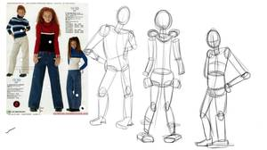
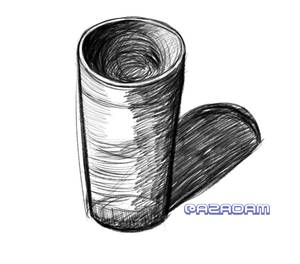

<!doctype html><html lang="en"><title>Studies - 1</title><meta name="viewport" content="width=device-width,initial-scale=1"><meta name="description" content=""><link href="../gallery.css?v=1770770965" rel="stylesheet" type="text/css" media="all"><header><h1> Studies - 1</h1><p></p><a href="../index.html">&#8592; Back to the index!</a></header><section><nav class="page-links"><span>Pages ... </span><a href="index.html">&#8592;</a><ul><li><a href="index.html">0</a><li><b>1</b><li><a href="2.html">2</a><li><a href="3.html">3</a></ul><a href="2.html">&#8594;</a></nav><section id="photos"><figure><a href="images/20220828_POSE STUDY 02.png" target="_blank"></a></figure><figure><a href="images/20220828_POSE STUDY 04.png" target="_blank"></a></figure><figure><a href="images/20220902_1.png" target="_blank"></a></figure><figure><a href="images/20220903_CLIPSTUDIOPAINT_FFDMIMLSJM_watermarked.png" target="_blank"></a></figure></section><nav class="page-links"><span>Pages ... </span><a href="index.html">&#8592;</a><ul><li><a href="index.html">0</a><li><b>1</b><li><a href="2.html">2</a><li><a href="3.html">3</a></ul><a href="2.html">&#8594;</a></nav></section><footer>Made with <a href="https://melonking.net/melon?z=/free/software/gallery-maker" target="_blank">Melon's Gallery v0.0.2</a> - Updated: Feb 11, 2026</footer><audio autoplay loop></audio><script src="../gallery.js?v=1770770965"></script>